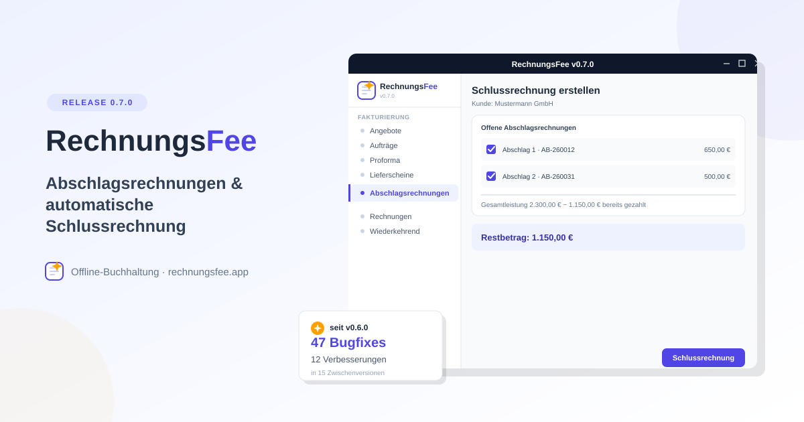

RechnungsFee 0.7.0 – Abschläge, die sich von selbst verrechnen
10. Oktober 2026
Wer größere Projekte abrechnet, kennt das: Erst eine Anzahlung, später noch eine Teilzahlung, am Ende die Schlussrechnung – und von Hand nachhalten, was davon schon bezahlt wurde, wird schnell unübersichtlich. RechnungsFee 0.7.0 nimmt einem genau das ab.
Abschlagsrechnungen & automatische Schlussrechnung
Neuer, optional aktivierbarer Dokumenttyp unter Einstellungen → Unternehmen → Funktionen: die Abschlagsrechnung. Keine Mini-Variante der normalen Rechnung – eine Abschlagsrechnung ist eine vollwertige, steuerlich wirksame Rechnung. Zahlung, Mahnwesen, Storno, Kontokorrent und ZUGFeRD-Export funktionieren damit genau wie bei jeder anderen Rechnung auch.
Der eigentliche Clou zeigt sich beim Schreiben der Schlussrechnung: Ein neuer Auswahl-Dialog listet alle offenen Abschlagsrechnungen des Kunden auf (eingeschränkt auf den überlappenden Leistungszeitraum, falls gesetzt). Ankreuzen genügt – RechnungsFee zieht automatisch den tatsächlich gezahlten Betrag ab, auch bei Unter- oder Überzahlung. Ist das Formular noch leer, übernimmt die Schlussrechnung sogar die Original-Position(en) der Abschlagsrechnung als eigene, frei editierbare Leistung.
Und für den Fall, dass die Summe der Abschläge die Gesamtleistung übersteigt: Die Schlussrechnung darf dann auch negativ werden, statt blockiert zu werden – der Kunde hat ein Guthaben, und eine Zahlung darauf ist dann korrekt eine Rückerstattung statt einer Einnahme.
Das Feature kam als Vorschlag aus der Community – danke an abgebytezt für die Anregung und Peter1061 für die hilfreiche Einschätzung zur Abzugsbasis (Issue #419).
47 Bugfixes und 12 Verbesserungen seit v0.6.0
Bis v0.7.0 fertig war, lagen 15 Zwischenversionen dazwischen (v0.6.1 bis v0.6.15) – in Summe 47 Bugfixes und 12 Verbesserungen, dazu rund 20 weitere kleinere Funktionen. Ein kurzer redaktioneller Rückblick, was davon am meisten hängen geblieben ist:
- Der Thunderbird-Versand brauchte fünf Anläufe. Als Alternative zu SMTP eingeführt (v0.6.5), fand er auf Windows zunächst die falschen Installationspfade (v0.6.6), blieb dann in Wartestellung hängen (v0.6.6), wurde von einem Sicherheitsmechanismus der App-Plattform komplett blockiert (v0.6.7) und bekam danach zu weitreichende Rechte zugewiesen (v0.6.8) – erst v0.6.10 hat ihn auf allen drei Betriebssystemen zuverlässig zum Laufen gebracht.
- Steuerliche Korrektheit war der große rote Faden. Die Kleinunternehmer-Regelung (§19 UStG) wurde an einem halben Dutzend bisher übersehener Stellen nachgezogen – Artikel, wiederkehrende Rechnungen, Buchungsvorlagen, Eingangsrechnungen. Dazu kamen mehrere Korrekturen an den UStVA-Kennziffern rund um §13b und Reverse-Charge, teils bis zurück zu Alt-Buchungen. Auffällig viele dieser Berichte kamen von ludgerknorps, derdobbi und UweKoslowski – danke für die gründliche Fehlersuche.
- Linux-spezifische PDF-Anzeige gleich zweimal geflickt – einmal der native Kalender unter WebKitGTK, der sich nicht mehr schloss, einmal ein komplett leeres PDF-Fenster unter KDE Plasma/Wayland.
Nebenbei sind auch ein paar spürbare Features mit eingeflossen, die keine eigene Ankündigung bekommen haben: eine Kontokorrent-Übersicht über alle Kunden und Lieferanten mit offenem Saldo, ein Menüpunkt für offene Verbindlichkeiten samt Skonto-Frist, ein GoBD-Änderungsprotokoll für nachträgliche Software-Eingriffe, und die Länderauswahl ist von 39 auf alle 196 Staaten gewachsen.
Download & Installation
RechnungsFee gibt's für Windows, Linux (AppImage) und macOS (Apple Silicon) – alle Downloads inklusive SHA256-Prüfsummen auf der RechnungsFee-Webseite.
Für gescannte Belege und Kassenbons per OCR wird zusätzlich Tesseract benötigt – der Linux-Installer bietet die Installation automatisch an, unter Windows übernimmt das der Setup-Assistent gleich mit.
Open Source
RechnungsFee ist unter der AGPLv3 lizenziert – Code offen auf GitHub, und Vorschläge aus der Community sind ausdrücklich willkommen, wie die Abschlagsrechnungen in dieser Version gezeigt haben.
Mehr Infos: Webseite | Projektseite | GitHub